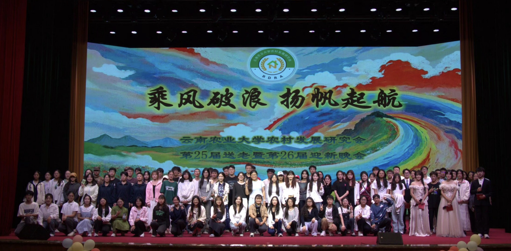
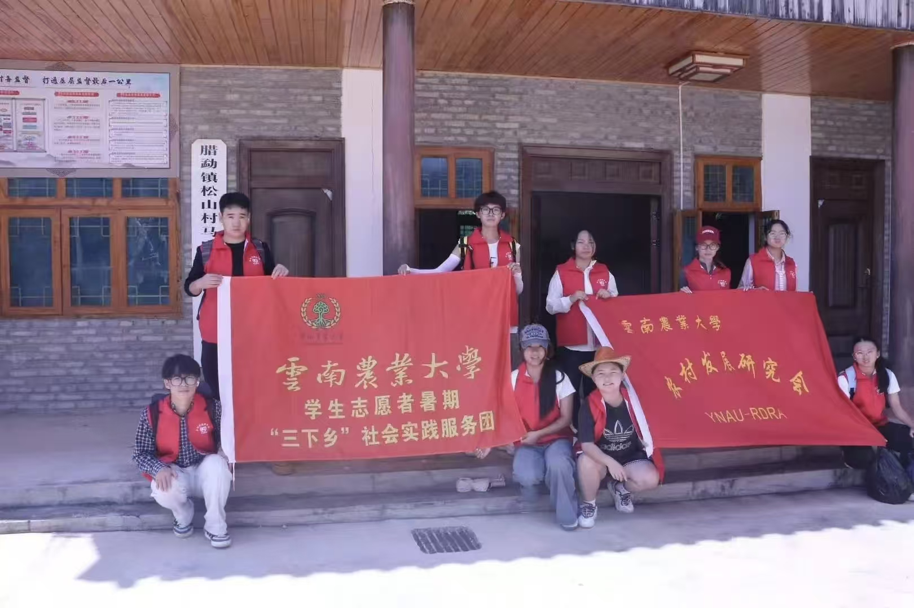
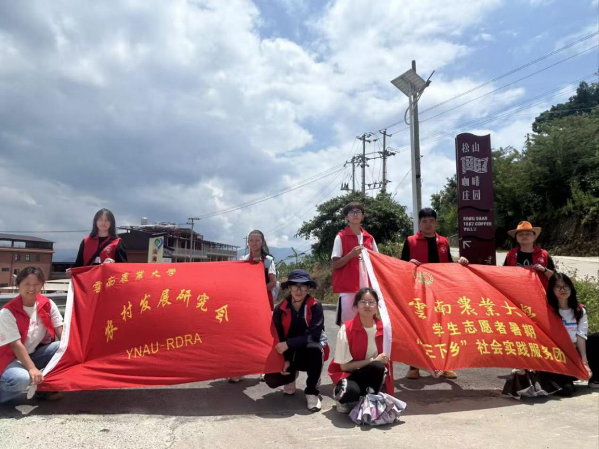
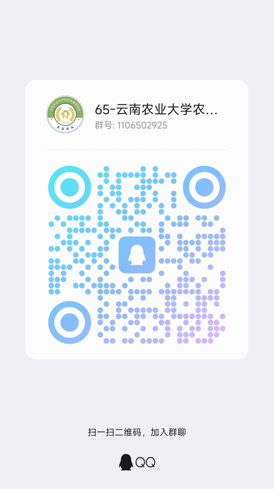

学术交流部
组织内部培训、学术讲座及知识竞赛，联络兄弟院校开展对外学术交流。
学术交流
YNAU RURAL DEVELOPMENT RESEARCH ASSOCIATION
关心农民 · 支持农业 · 发展农村
情系三农，
扎根乡土。
我们是谁
农村发展研究会（简称"农研会"）成立于1988年，是在云南农业大学各级部门指导下，由在校研究生与本科生自发组成的科研学术性实践团体。协会以"关心农民、支持农业、发展农村"为宗旨，秉承"团结、奉献、求实、发展"的精神，坚持以人为本，倡导"关注、参与、投入"的工作态度，致力于培养心系"三农"的复合型人才。
历经三十余年积淀，农研会已发展成为拥有学术交流部、信息编辑部、勤工部、宣传部、秘书处、组织交流部、综合部、策划部八个部门的规模化社团。长期利用寒暑假组织志愿者奔赴云南各地州偏远农村，系统开展支农调研与支教助学系列活动；同时在昆明城中村定期举办科普宣传，积极参与环保公益，并邀请校内外专家举办"三农"主题讲座，搭建起理论与实践结合的平台。
社团累计获"全国大学生参与新农村建设十大杰出团队""云南省优秀志愿服务团队""云南省十佳社团""五星级社团"等多项荣誉。未来，农研会将持续深耕品牌建设，凝聚更多青年学子，为服务边疆乡村振兴贡献智慧与力量。
组织架构
组织内部培训、学术讲座及知识竞赛，联络兄弟院校开展对外学术交流。
学术交流承担协会形象设计、招新宣传及活动海报制作，提升社团影响力。
形象宣传负责稿件征集、刊物编辑出版、活动摄影及网络资料库建设与维护。
编辑出版开展爱心支教、废旧回收、募捐助学，关注农村贫困学生及农民工子女教育。
支教助学统筹活动策划，开展三农及环保课题研究，申请相关项目扶持基金。
课题策划管理资料档案、财务预算、考勤及办公用品，负责经费审批与工作报告。
统筹管理负责对外联络与合作，宣传三农理念，对接校内外社团及媒体资源。
对外联络负责策划组织支农调研、下乡实践，保持与调研基地联系，关注农村发展动态。
支农调研活动剪影
从松山调研到中岭岗村支教，从家乡宣讲到三农知识竞赛。
每一帧都是农研会扎根乡土的注脚。
品牌项目

01本次三下乡实践活动由云南农业大学学子开展，面向腊勐镇各村留守儿童与当地农户。一方面开设暑期托管班，开展课业辅导、安全教育与兴趣课程；另一方面深入田间，为农户提供种植技术指导。本次实践坚持教育帮扶、产业服务并行，以专业知识助力乡村发展，实现青年实践与乡村振兴双向赋能。
暑期托管 · 课业辅导 · 种植技术指导
02云南农业大学乡村发展研究会志愿者，赴腊勐镇松山咖啡庄园开展三下乡实践。团队调研咖啡产业现状，开展种植技术指导，依托专业知识助力产业提质，以青年实践力量赋能乡村特色产业振兴发展。
咖啡产业调研 · 种植技术指导 · 产业提质迎新晚会由各部门分工筹备、联合出演。各部门踊跃报送节目，包含动人歌曲演唱、活力舞蹈表演、主题话剧节目。晚会以丰富多彩的节目形式迎接新生到来，拉近新老成员距离，展现社团青春风貌，营造温暖融洽的集体氛围，开启新学期全新篇章。
歌曲演唱 · 舞蹈表演 · 主题话剧本次废旧书报回收公益活动，面向全体在校学生开展。同学们整理闲置旧书本、废弃报刊进行集中回收，实现资源循环再利用。本次活动倡导绿色低碳理念，减少资源浪费，引导大家树立环保意识。回收所得物资统一处理，收益用于公益项目，以微小行动践行节约理念，共建绿色文明校园。
资源回收 · 绿色低碳 · 公益环保